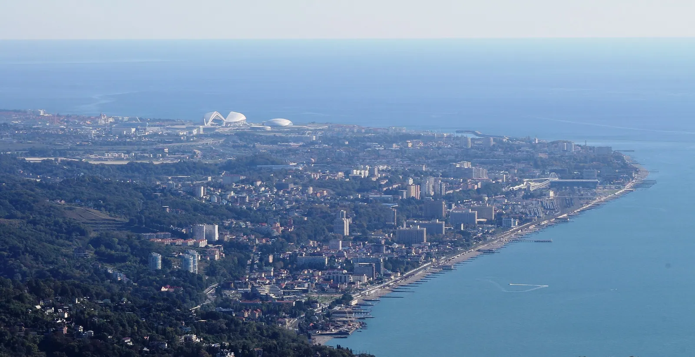

Форт Александрия заложен 21 апреля 1838 года, по новому стилю — 3 мая
4 232 дня
осталось до 3 мая 2038 года, двухсотлетия города
Эпилог
2038
Сочи-2038
Маршрут закончился сегодняшним днём. Город продолжается.
Сочи и «Сириус»

Весь маршрут в одном кадре: побережье с горы Ахун, вдали купола Олимпийского парка
Фото: SKas, 2015, CC BY-SA 4.0
Линия времени от 1838 до 2044 года и шесть открытых вопросов
Как читать линию
Янтарные метки — годы глав маршрута. После «сегодня» линия станет пунктиром: это сроки, которые уже записаны в документах.
Листайте: линия потянется вправо, к 2044 году. У каждой будущей метки — вопрос, на который документы пока не отвечают.
Вопрос 1 из 6 · 2026
Где пройдёт граница между курортом и заповедником?
На чём стоит. В 2015 году «Роза Хутор», по сообщениям СМИ, получила в сервитут ещё 541 га земли Сочинского нацпарка. В 2018 году Комитет всемирного наследия ЮНЕСКО потребовал отчёт о планах развития горного туризма рядом с Кавказским заповедником.
Источник: «Википедия», статьи «Роза Хутор» и «Кавказский заповедник»
Вопрос 2 из 6 · 2027
Хватит ли дорог городу между морем и горами?
На чём стоит. Обход Адлера — 8,2 км, четыре полосы, по оценке декабря 2025 года 100 млрд рублей, завершить надеются летом 2027 года. Генплан предлагает ещё 303,8 км новых муниципальных дорог.
Источник: «Википедия», «Обход Адлера»; sochi.ru
Вопрос 3 из 6 · 2030
Что станет с «Сириусом» после 2030 года?
На чём стоит. Закон № 437-ФЗ задаёт переходный период до 31 декабря 2030 года, а границы территории можно менять только поправкой к закону. В конце 2022 года рассматривали законопроект о расширении границ, но отложили.
Источник: kremlin.ru, закон № 437-ФЗ (ст. 7, ст. 47); «Википедия», «Сириус»
2035 · план без вопроса
Стратегия Сочи
Стратегия социально-экономического развития Сочи до 2035 года (решение Городского Собрания № 166 от 21.12.2023): пять флагманских проектов, от «Сочи — курорт мечты» до «Долгосрочного плана по развитию Сочинской агломерации».
Источник: sochi.ru, «Стратегия Сочи 2035»
Вопрос 4 из 6 · 2038
Как Сочи встретит 200-летие в 2038 году?
На чём стоит. Форт Александрия заложен 21 апреля (3 мая) 1838 года. Программы празднования или плана города на 2038 год мы в открытых документах не нашли.
Источник: «Википедия», «История Сочи»
Вопрос 5 из 6 · 2044
До 800 тысяч жителей: как, если жилищного строительства «не предполагается»?
На чём стоит. В генплане записано, что его вектор направлен на развитие санаторно-курортной отрасли и «не предполагает развитие жилищного строительства», а прогнозируемая численность населения — 800 тысяч человек при нынешних 564–720 тысячах.
Источник: sochi.ru, генеральный план (решение № 180 от 27.12.2023)
Вопрос 6 из 6 · 2044
Сколько береговой линии останется пляжем?
На чём стоит. Генплан обещает 73,1 км пляжей из 98 км побережья. Сколько их сейчас, в тексте не названо. «Википедия» пишет, что олимпийская стройка перекрыла вынос гальки и песка рекой Мзымтой и пляжи у Имеретинской низменности размываются.
Источник: sochi.ru; «Википедия», «Имеретинская низменность»
Что это
В 2038 году Сочи исполнится 200 лет. Прямого плана «на 2038 год» в открытых документах нет, зато есть три документа с другими горизонтами.
Закон о «Сириусе» (до 2030 года), стратегия Сочи (до 2035-го) и генеральный план (до 2044-го). Эпилог пересказывает их и ставит вопросы, на которые пока нет ответа.
Как это появилось
Будущее, которое уже записано
2044
Утверждён Городским Собранием Сочи 27 декабря 2023 года (решение № 180). Над ним работали с августа 2021 года; на общественных обсуждениях в марте 2023 года поступило более 6000 обращений, и проект скорректировали. — 2044 год.
2035
Принята 21 декабря 2023 года (решение № 166). В ней пять : «Сочи — курорт мечты», «Сочи — экополис будущего», «Выбирай сочинское», «Гармоничное развитие пространственных округов Сочи» и «Долгосрочный план по развитию Сочинской ».
2030
Переходный период «Сириуса»
По закону № 437-ФЗ он длится до 31 декабря 2030 года (в редакции закона от 28 декабря 2025 года). Совет территории утверждает стратегию её развития на пять лет; на сайте территории описаны кластеры: кампус университета, спортивный кластер на берегу, концертный комплекс и технопарк.
2027
Обход Адлера
Самый конкретный проект: четырёхполосная платная дорога длиной 8,2 км между селом Высокое и микрорайоном Кудепста. В 2024 году её оценивали примерно в 74 млрд рублей, в декабре 2025 года вице-премьер Марат Хуснуллин назвал окончательную стоимость в 100 млрд и выразил надежду закончить работы летом 2027 года.
2038
Чего в документах нет
Слова «2038». Ни программы празднования двухсотлетия, ни общего плана города на этот год мы не нашли. Ближайшие записанные горизонты — 2027, 2030, 2035 и 2044 годы.
Первоисточник
Сколько людей живёт в Сочи? Зависит от того, как считать
Генеральный план Сочи · пояснение на портале администрации города
«Расчетный срок реализации планируемых мероприятий Генерального плана — 2044 год. Действующая численность населения согласно данным Росстата составила 564 тысячи человек. Однако, принимая во внимание специфику курортного города, при расчете действующей численности населения были использованы данные, в том числе мобильных операторов и медицинских учреждений. По результатам расчета численность населения составила 720 тысяч человек. Учитывая то, что вектор Генерального плана направлен на развитие санаторно-курортной отрасли и не предполагает развитие жилищного строительства, прогнозируемая численность населения на расчетный срок составит 800 тысяч человек».
На что посмотреть
Пять цифр генплана до 2044 года
жителей к 2044 году по прогнозу. Сейчас 564 тысячи по Росстату или 720 тысяч по расчёту авторов плана.
вырастет площадь зелёных насаждений общего пользования: со 121,57 до 1553,20 га. Парки, скверы, бульвары.
пляжей (229,7 га) из 98 км береговой полосы. Сколько их сейчас, в тексте плана не сказано.
новых муниципальных дорог и 655 км на реконструкцию; связи между посёлками в обход федеральной трассы.
образования, а ещё 100 объектов здравоохранения и 71 крупный спортивный объект; в каждом районе — объекты культуры.
2044
«Расчетный срок реализации планируемых мероприятий Генерального плана — 2044 год.»
Генеральный план Сочи, утверждён 27 декабря 2023 года
Город между морем и горами
Где вырастет следующий слой
Значение для Сочи
Генплан делает ставку на санаторно-курортную отрасль, а не на жильё: Сочи предстоит решить, как вырасти до 800 тысяч жителей и остаться курортом.
Значение для России
Сочи — длинный государственный проект: от форта 1838 года до плана на 2044 год. У каждого слоя была цена и осталось наследие; следующий слой решается в документах, которые может прочитать каждый.
Раздел курса: 5. Вызовы будущего и развитие страны
Ценность: служение Отечеству и ответственность за его судьбу
Факт, который мало кто знает
В открытых документах города нет слова «2038». До двухсотлетия меньше двенадцати лет, а ни программы празднования, ни плана на этот год мы не нашли: генплан смотрит на 2044-й, стратегия — на 2035-й.
Проверено по страницам генплана и стратегии на sochi.ru и по закону № 437-ФЗ, 1 октября 2026 года
Что вы узнали
Три вещи о будущем Сочи
Будущее можно прочитать
Генеральный план до 2044 года, стратегия до 2035-го и закон о «Сириусе» с переходным периодом до 2030-го лежат в открытом доступе.
Цифры зависят от счёта
В Сочи 564 тысячи жителей по Росстату и 720 тысяч по расчёту генплана, куда вошли данные мобильных операторов и медицинских учреждений.
Двухсотлетие — вопрос
Плана «на 2038 год» в документах нет. Честный разговор о нём строится на вопросах: сколько пляжей, где граница курорта и заповедника, каким будет «Сириус».
Проверьте себя Почему генплан насчитал 720 тысяч жителей, а Росстат — 564 тысячи?
Росстат считает зарегистрированных жителей. Авторы генплана учли специфику курортного города и добавили данные мобильных операторов и медицинских учреждений: в Сочи живёт и работает много людей без регистрации.
Источники, права на кадры и что осталось непроверенным
Источники
- Генеральный план Сочи — официальный портал администрации города (решение Городского Собрания № 180 от 27.12.2023)
- Стратегия Сочи 2035 — официальный портал администрации города
- Стратегия Сочи 2035: нормативно-правовые акты (решение Городского Собрания № 166 от 21.12.2023)
- Федеральный закон от 22.12.2020 № 437-ФЗ «О федеральной территории „Сириус“» (ст. 7, 12, 47), kremlin.ru
- Федеральная территория «Сириус»: «Архитектура и градостроительство» (кластеры развития), официальный сайт
- Обход Адлера — Википедия
- Сириус (посёлок городского типа) — Википедия
- Сочи — Википедия (основание города, 1838)
- История Сочи — Википедия
- Имеретинская низменность — Википедия
- Роза Хутор — Википедия
- Кавказский заповедник — Википедия
Кадры
- Побережье от горы Ахун, 2015: SKas, 2015, CC BY-SA 4.0, Wikimedia Commons.
- Побережье и Кавказ с МКС, 5 февраля 2014: NASA, экипаж 38-й экспедиции МКС, общественное достояние.
- Трасса «Сочи Автодром», октябрь 2018: Arne Müseler, 2018, CC BY-SA 3.0 de, Wikimedia Commons.
- С горы Ахун в сторону гор, октябрь 2015: SKas, 2015, CC BY-SA 4.0, Wikimedia Commons.
Что мы не смогли подтвердить вторым источником
- Слова «2038» нет ни в одном из открытых документов; программу двухсотлетия города и план на 2038 год не нашли. Дата основания города — по «Википедии» (журнал А. М. Симборского): 21 апреля (3 мая) 1838 года.
- Текст самой стратегии Сочи до 2035 года (PDF) не читали: на странице стратегии названы решение № 166 от 21.12.2023 и пять флагманских проектов; цели и показатели внутри документа не проверяли.
- Обход Адлера: стоимость 74 млрд рублей (2024) и 100 млрд (слова Хуснуллина, декабрь 2025), срок «летом 2027 года» («надеюсь») приведены по «Википедии», первоисточник не открывали.
- Как цифра 800 тысяч жителей сочетается с тем, что генплан «не предполагает развитие жилищного строительства», на странице плана не объясняется; мы ставим это как вопрос.
- Количество пляжей сегодня: в открытом тексте плана нет; утверждение об эрозии пляжей у Имеретинской низменности — из «Википедии».
- Законопроект о расширении границ «Сириуса» (конец 2022 года, отложен): только «Википедия».
- Сервитут 541 га и требование ЮНЕСКО 2018 года: «Википедия»; первичные документы не открывали.
- Кластеры «Сириуса» описаны на официальном сайте без дат (кроме концертного комплекса, который планировали закончить в 2022 году); фактическое состояние не проверяли.